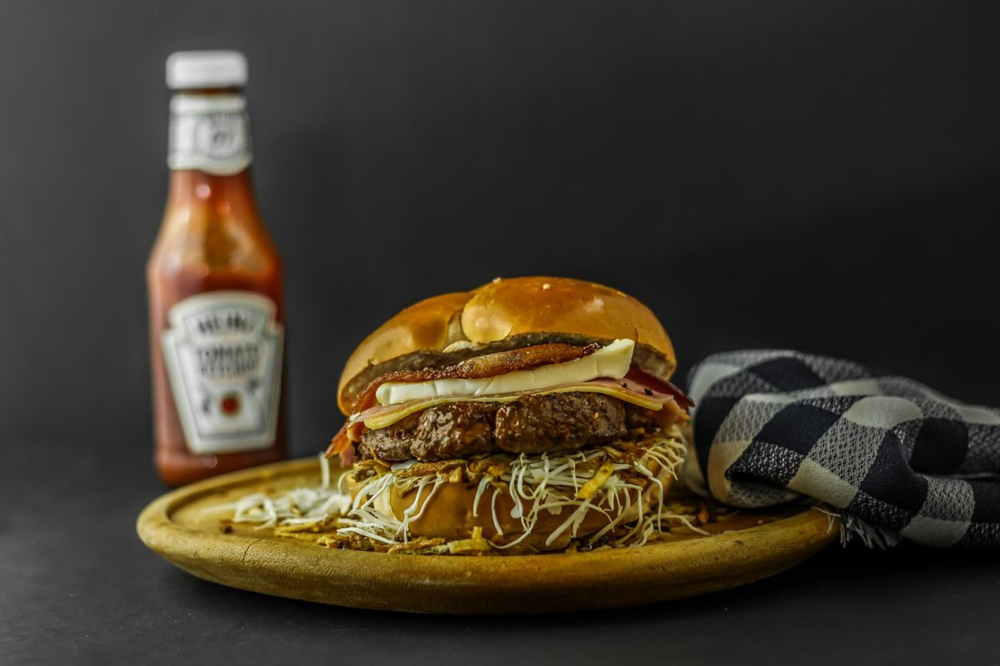

Moss Point, Mississippi
Comfort food, cooked to order, in Moss Point
A comfort-food restaurant in Moss Point, known as DuB's Eatery, serving cooked-to-order comfort food.
Moss Point, Mississippi
A comfort-food restaurant in Moss Point, known as DuB's Eatery, serving cooked-to-order comfort food.
Dubs, known as DuB's Eatery, is a comfort-food restaurant in Moss Point. Its food is cooked to order.


3740 Main St, Moss Point, MS 39563
Monday 11:00 AM to 10:00 PM; Tuesday to Thursday 11:00 AM to 9:00 PM; Friday 11:00 AM to 10:00 PM; Saturday and Sunday closed